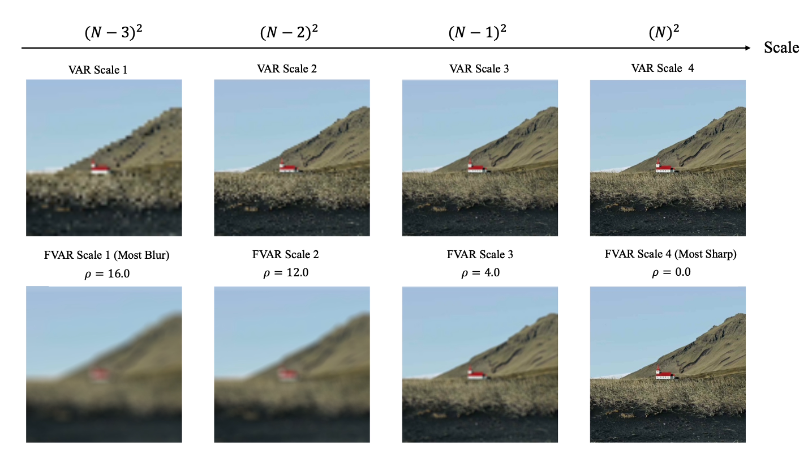
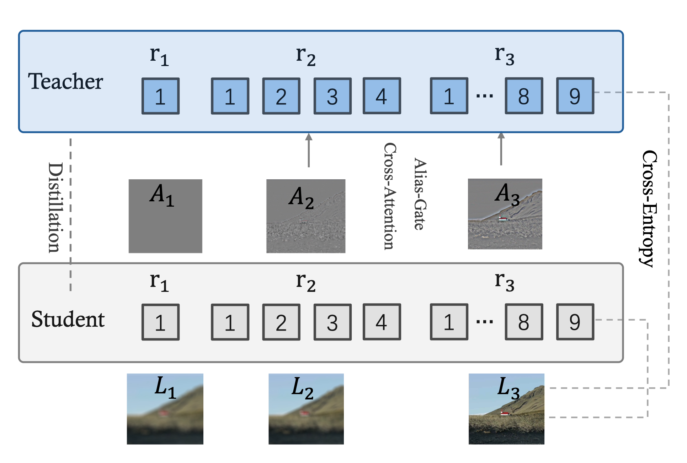
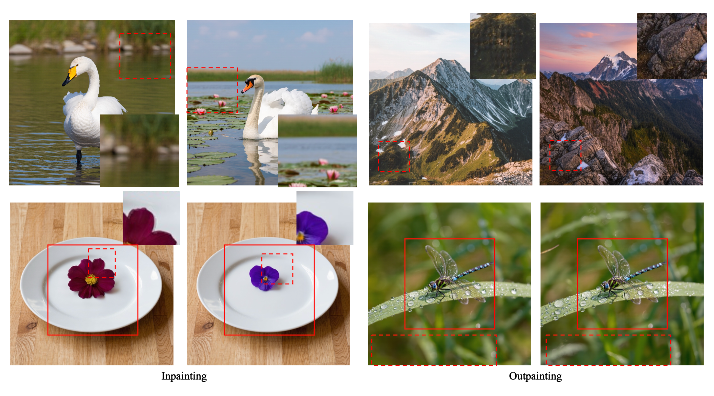

Visual autoregressive models achieve remarkable generation quality through next-scale predictions across multi-scale token pyramids. However, the conventional method uses uniform scale downsampling to build these pyramids, leading to aliasing artifacts that compromise fine details and introduce unwanted jaggies and moiré patterns. To tackle this issue, we present FVAR, which reframes the paradigm from next-scale prediction to next-focus prediction, mimicking the natural process of camera focusing from blur to clarity. Our approach introduces three key innovations: 1) Next-Focus Prediction Paradigm that transforms multi-scale autoregression by progressively reducing blur rather than simply downsampling; 2) Progressive Refocusing Pyramid Construction that uses physics-consistent defocus kernels to build clean, alias-free multi-scale representations; and 3) High-Frequency Residual Learning that employs a specialized residual teacher network to effectively incorporate alias information during training while maintaining deployment simplicity. Specifically, we construct optical low-pass views using defocus point spread function (PSF) kernels with decreasing radius, creating smooth blur-to-clarity transitions that eliminate aliasing at its source. To further enhance detail generation, we introduce a High-Frequency Residual Teacher that learns from both clean structure and alias residuals, distilling this knowledge to a vanilla VAR deployment network for seamless inference. Extensive experiments on ImageNet demonstrate that FVAR substantially reduces aliasing artifacts, improves fine detail preservation, and enhances text readability, achieving superior performance with perfect compatibility to existing VAR frameworks.

Progressive Refocusing vs. Uniform Downsampling. Our method shifts the paradigm from "next-scale prediction" to "next-focus prediction." (Left) Standard VAR uses uniform downsampling, introducing aliasing artifacts from coarse to fine scales. (Right) Our proposed FVAR employs progressive refocusing with decreasing PSF radius, mimicking camera focusing from blur to clarity. This physics-consistent approach eliminates aliasing at the source while preserving fine details through dual-path tokenization.

High-Frequency Residual Teacher Training Architecture. Our approach employs dual networks during training: the High-Frequency Residual Teacher (top) processes both structure tokens 𝑟𝑘 and alias tokens 𝑎𝑘 through Alias-Gate Cross-Attention, while the Deployment Network (bottom) only uses structure tokens to maintain vanilla VAR compatibility. Residual knowledge transfer enables the deployment network to benefit from high-frequency information during training while ensuring zero inference overhead.

Visual quality comparison between VAR and FVAR. To compare the quality of spatial hierarchy and high-frequency details, these are visualization results at 1024×1024 resolution. The first row shows image generation, and the second row shows inpainting and outpainting (solid red boxes indicate input regions). In each group, VAR is on the left and FVAR is on the right. Dashed red boxes highlight key regions of interest.
@misc{li2025fvarvisualautoregressivemodeling,
title={FVAR: Visual Autoregressive Modeling via Next Focus Prediction},
author={Xiaofan Li and Chenming Wu and Yanpeng Sun and Jiaming Zhou and Delin Qu and Yansong Qu and Weihao Bo and Haibao Yu and Dingkang Liang},
year={2025},
eprint={2511.18838},
archivePrefix={arXiv},
primaryClass={cs.CV},
url={https://arxiv.org/abs/2511.18838},
}